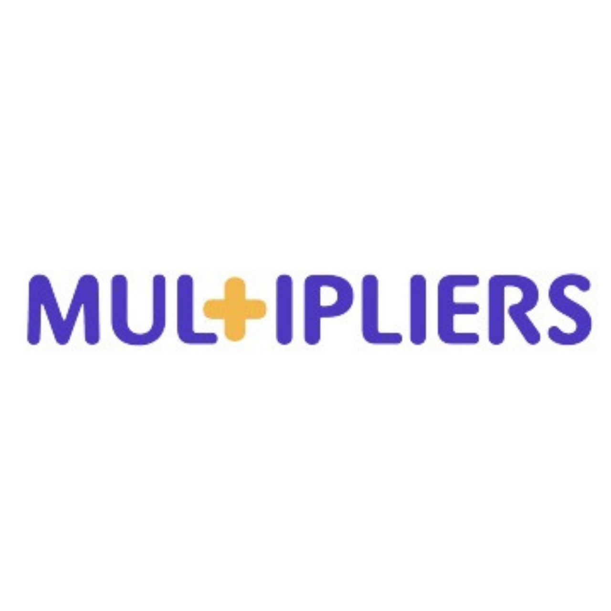

Progetto Multipliers
Progetto Multipliers
- L'acqua di Reggio Emilia -
Iren è uno dei partner del progetto Multipliers, coordinato dall’Università di Bonn e svolto in collaborazione con università e centri di ricerca di sei diversi Paesi dell’Unione Europea. (Italia, Germania, Spagna, Svezia, Finlandia e Cipro).
Multipliers, finanziato nell’ambito del programma Horizon 2020, intende affrontare le problematiche ambientali del terzo millennio, portando nelle scuole progetti innovativi e sperimentando nuovi approcci formativi per un apprendimento aperto e inclusivo, con impatto sugli stili di vita dei cittadini.